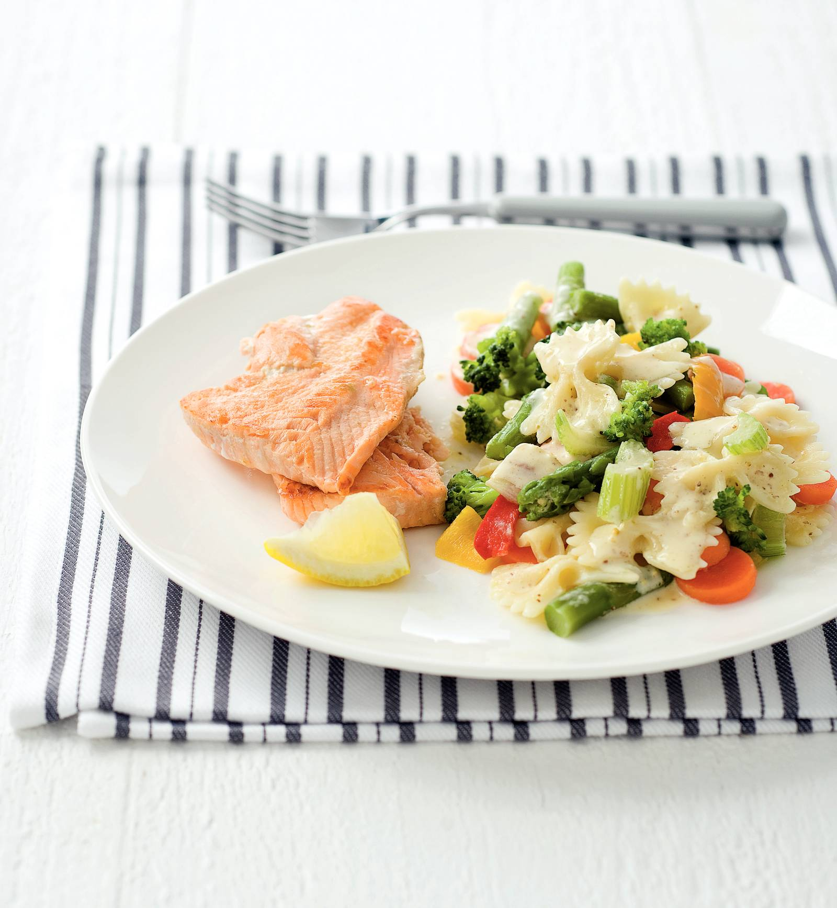

Zalm met groenten en farfalle

Ingredienten
- 1 citroen
- 3 el olijfolie
- 2 pakjes zalmfilet
- 300 g farfalle
- 1 zak wokgroente
- 1 el mosterd
- 50 g crème fraîche
Bereiding
- Halveer de citroen, pers 1 helft uit en snijd de andere in vieren. Meng 1 el citroensap met 1 el olie en
wrijf de zalmfilets hiermee in. Bestrooi de zalmfilets met peper en zout. Kook de farfalle volgens de
aanwijzingen op de verpakking.
- Verhit de rest van de olie in een wok en roerbak de wokgroente op hoog vuur 5 min. Voeg de rest van het
citroensap, de mosterd en de crème fraîche toe en breng op smaak met peper en zout. Verhit een koekenpan op
hoog vuur zonder olie of boter en bak de zalmfilets 1 min. Keer om en bak nog 1 min. Zet het vuur laag, doe
een deksel op de pan en bak de zalmfilets in 5 min. net gaar.
- Schep de farfalle door de groentesaus. Verdeel over 4 borden. Leg op elk bord een stuk zalm en serveer met
een stukje citroen.